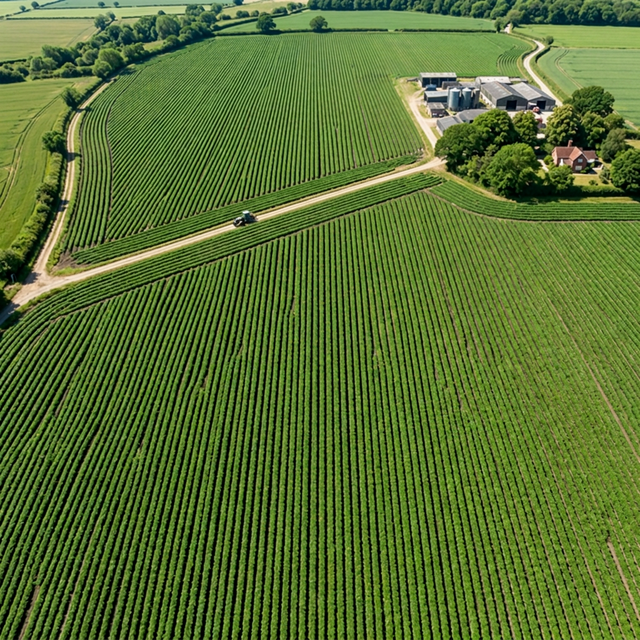

Plant Counting
Verify emergence and stand density, spot skips and clusters, and compare zones across a field.
- Counts & density heatmap
- Row/zone segmentation
Optimize crop health, increase yields, and make data-driven decisions with our advanced aerial drone insights platform across the Netherlands.

We translate complex aerial imagery into clear, actionable maps so you can act exactly where needed.
Verify emergence and stand density, spot skips and clusters, and compare zones across a field.
Identify weed pressure early to optimize scouting routes and apply treatments only where needed.
Utilize early stress identification via NDVI and a radiometric thermal snapshot to detect hidden moisture anomalies and nutrient deficiencies before visual symptoms appear.
We don't just fly standard cameras. We deploy specialized platforms fitted with multispectral and thermal imaging technology to gain deep biological insights you can't see with the naked eye.
Great for orthomosaics, visual inspection, and counting row crops with absolute clarity.
Detects plant vigor and stress patterns before they are visible in the green spectrum using near-infrared bands.
Identify temperature anomalies to spot hidden water stress, irrigation leaks, or compacted soil zones.
We confirm boundaries, crop stage, and desired outcomes.
Precision flight using automated drones optimized for weather timing.
Machine learning converts gigabytes of data into actionable layers.
Load tailored GeoTIFFs or PDFs straight into your agronomy tools.
Tell us about your field and goals. We respond within 24 hours to schedule a consultation flight.